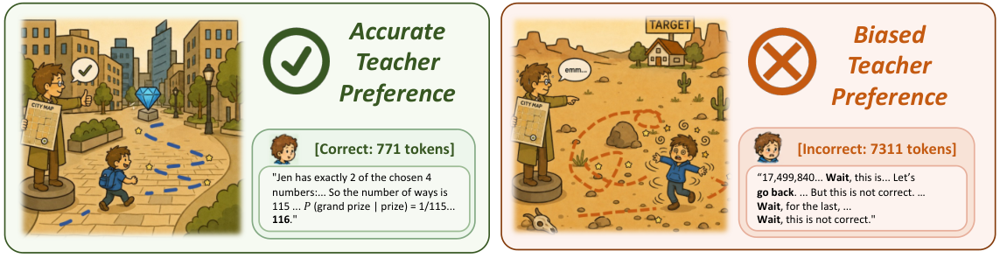

OPD is less like copying a master and more like a contestant performing while a judge scores. If the judge rewards good routines, the contestant gets more consistent at what they could already do. If the judge happens to love long, repetitive routines, the contestant learns exactly that, even though the judge would never perform that way.
OPD는 명인을 따라 하는 것보다, 참가자가 공연하고 심판이 채점하는 쪽에 가깝다. 심판이 좋은 공연에 점수를 주면 참가자는 원래 할 수 있던 것을 더 안정적으로 해낸다. 그런데 심판이 마침 길고 반복되는 공연을 좋아하면, 심판 자신은 절대 그렇게 하지 않더라도 참가자는 바로 그걸 배운다.
The view: the teacher scores, it doesn't demonstrate관점은 교사가 시범을 보이는 게 아니라 채점한다는 것
What matters is how well the teacher judges student rollouts, not how well it writes its own. The student only ever trains on its own samples.
중요한 것은 교사가 직접 얼마나 잘 쓰느냐가 아니라 학생 답안을 얼마나 잘 채점하느냐다. 학생은 언제나 자기가 뽑은 답안으로만 학습하기 때문이다.

- Recast the loss as RL.손실을 강화학습으로 다시 쓴다.Reverse KL equals maximizing teacher log-prob reward plus entropy over student-visited prefixes.역방향 KL은 학생이 지나간 접두사에서 교사 로그확률 보상과 엔트로피를 최대화하는 것과 같다.
- Audit the reward before training.학습 전에 보상을 점검한다.Rank initial student rollouts into 10 deciles by teacher advantage and check correctness, length, and repetition.처음 학생 답안을 교사 이득 기준 10개 구간으로 나누고 정답률, 길이, 반복을 본다.
- Fix the pool, not the teacher.교사가 아니라 후보 묶음을 고친다.Mask truncated rollouts, or warm up with SFT so pathological samples rarely appear.상한에 걸린 답안을 손실에서 빼거나, SFT로 예열해 병적인 답안이 거의 나오지 않게 한다.
Finding 1: gains are sharper, not wider발견 1은 넓어지는 게 아니라 날카로워진다는 것
After OPD the student solves slightly fewer distinct problems than before, though it solves them far more often. The gain is sampling efficiency, not new capability.
OPD 뒤 학생이 푸는 서로 다른 문제 수는 오히려 조금 줄지만, 그 문제들을 훨씬 자주 맞힌다. 이득은 표본 효율이지 새 능력이 아니다.
Finding 2: collapse is reward hacking발견 2는 붕괴가 보상 해킹이라는 것
The collapsed student is far worse than both its teacher and its starting point on length and repetition. Loss curves look normal, so the failure hides in plain sight.
무너진 학생은 길이와 반복에서 교사보다도, 출발점보다도 훨씬 나쁘다. 손실 곡선은 정상이라 실패가 눈앞에 있어도 잘 안 보인다.
| Setting · model | Acc. | Len. | Trunc. | Rep. |
|---|---|---|---|---|
| JustRL-1.5B teacher | 39.3 | 9.30 | 13.8 | 0.0 |
| DS-Distill-1.5B initial | 20.9 | 11.19 | 12.5 | 0.0 |
| DS-Distill-1.5B after OPD | 37.1 | 9.72 | 16.5 | 0.0 |
| Qwen3-4B teacher | 19.6 | 3.09 | 2.1 | 0.0 |
| Qwen3-1.7B-Base initial | 0.2 | 1.18 | 4.1 | 4.2 |
| Qwen3-1.7B-Base after OPD | 5.4 | 8.16 | 99.4 | 38.0 |
Changing which rollouts get reinforced fixes it with the same teacher. Warmup helps most because the bad samples never show up.
어떤 답안을 강화할지만 바꿔도 같은 교사로 문제가 풀린다. 예열이 가장 효과적인 것은 나쁜 답안이 애초에 나오지 않기 때문이다.
Before running OPD, score your student's own rollouts with the teacher and look at the top decile. If it is long or repetitive, the teacher will amplify that, whatever its benchmark scores say.OPD를 돌리기 전에 교사로 학생 답안을 채점해 상위 10%를 들여다보자. 거기가 길거나 반복적이라면, 교사의 벤치마크 점수와 상관없이 교사가 그걸 키울 것이다.
Only 1.5B–1.7B students on math, and the collapse case uses a base model that solves 0.2% at the start. Masking drops about 90% of samples and slightly hurts two AIME sets with the 8B teacher.학생은 수학 과제의 1.5B–1.7B 모델뿐이고, 붕괴 사례는 처음 정답률이 0.2%인 베이스 모델에서 나왔다. 마스킹은 표본의 약 90%를 버리며, 8B 교사에서는 AIME 두 세트의 점수를 조금 깎는다.